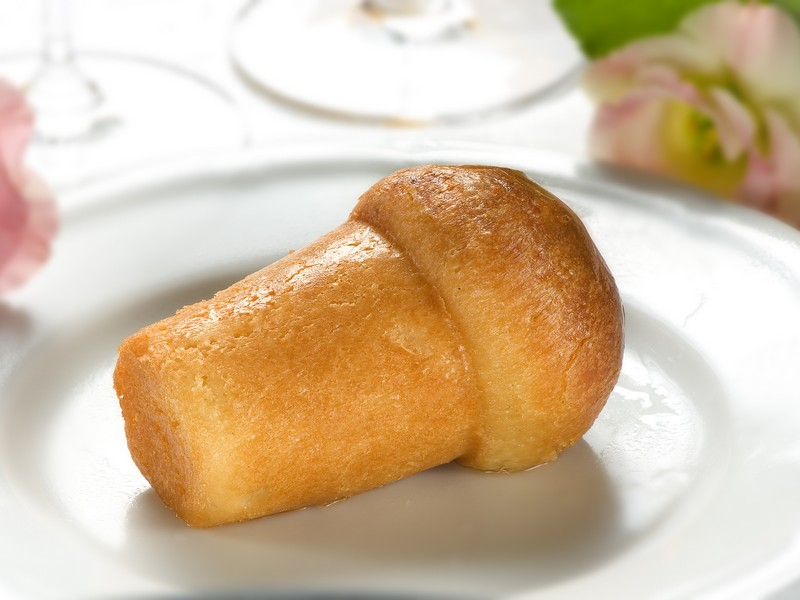

Babà Napoletano al Rum
Il re incontrastato della pasticceria napoletana. Un lievitato soffice e alveolato a forma di fungo, imbevuto in una ricca e profumata bagna al rum, con una superficie lucida e invitante.

Ingredienti
- 250g di Farina Manitoba (o farina con W elevato)
- 4 Uova medie (circa 200g, a temperatura ambiente)
- 70g di Burro morbido a pomata
- 30g di Zucchero semolato
- 15g di Lievito di birra fresco
- 1 pizzico di Sale fino
Per la Bagna al Rum:
- 500ml di Acqua
- 250g di Zucchero
- 150ml di Rum scuro per dolci
- q.b. Scorza di limone e arancia biologici
Per la Lucidatura (opzionale):
- q.b. Gelatina per dolci o confettura di albicocche scaldata
Procedimento
- Preparazione del lievito: Sciogli il lievito di birra in un cucchiaio d'acqua tiepida preso dal totale, con un pizzico di zucchero.
- Impasto principale: Versa la farina nella planetaria (o in una ciotola capiente), aggiungi lo zucchero, il lievito sciolto e comincia ad incorporare le uova una alla volta, attendendo che ciascun uovo sia completamente assorbito prima di aggiungere il successivo.
- Incordatura e burro: Lavora l'impasto finché non diventa lucido, elastico e incordato. Aggiungi il sale e successivamente il burro morbido a pezzetti poco per volta, continuando ad impastare finché la massa non stacca dalle pareti della ciotola.
- Prima lievitazione e Formatrice: Copri la ciotola e fai lievitare l'impasto in un luogo caldo per circa 1 ora e mezza (fino al raddoppio). Imburra molto bene gli stampini tipici da babà.
- Messa in stampo e Seconda lievitazione: Preleva delle palline di impasto e inseriscile negli stampini riempiendoli per circa 1/3 del loro volume. Fai lievitare nuovamente finché la cupola del babà non fuoriesce dal bordo dello stampo (circa 1 ora/1 ora e mezza).
- Cottura: Cuoci in forno statico preriscaldato a 180°C per circa 20-25 minuti fino a doratura intensa. Sforma i babà appena pronti e lasciali raffreddare completamente su una griglia.
- Preparazione della bagna: Porta a bollore acqua, zucchero e scorze di agrumi per 5 minuti. Spegni il fuoco, fai intiepidire lo sciroppo (intorno ai 40°C), filtralo e aggiungi il rum.
- Inzuppatura: Immergi i babà freddi nella bagna tiepida, premendoli delicatamente per far assorbire il liquido. Strizzali molto leggermente e disponili su un piatto da portata. Spennella la superficie con gelatina o confettura per un effetto lucidissimo.
💡 Note Finali e Consigli dell'Mastro Pasticcere
- Regola d'oro (Freddo/Caldo): Ricorda la regola fondamentale per un’inzuppatura perfetta: babà ben freddo (e asciutto) dentro una bagna calda/tiepida. Se immergi il babà caldo nella bagna calda rischierai di romperlo.
- Servizio: Puoi servire il babà semplice oppure tagliato a metà e farcito con ciuffi di panna montata, crema pasticcera e amarene sciroppate.
- Versione Analcolica: Per una bagna priva di alcol puoi sostituire il rum con un estratto o aroma di rum concentrato diluito nello sciroppo di agrumi.